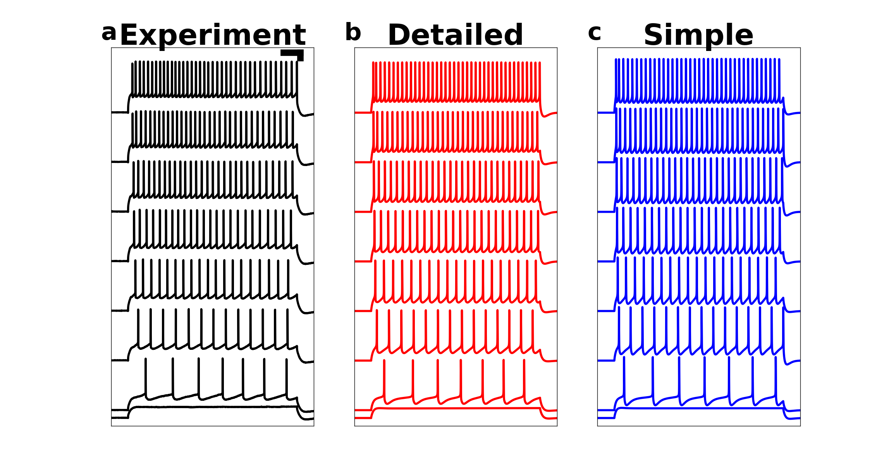

This simulation was used in the following article:
Neymotin SA, Suter BA, Dura-Bernal S, Shepherd GMGS, Migliore M, Lytton WW.
Optimizing computer models of corticospinal neurons to replicate in vitro dynamics.
Journal of Neurophysiology Published 19 October 2016 DOI: 10.1152/jn.00570.2016
http://jn.physiology.org/content/early/2016/10/14/jn.00570.2016.abstract
The code in this folder generates Figures 4 and 6 from the paper.
The simulation was tested/developed on LINUX systems, but may run on Microsoft Windows or Mac OS.
To run the demo, you will need the NEURON simulator (newest development version of 7.5 and up;
available at https://www.neuron.yale.edu/neuron/download/getdevel)
compiled with python enabled. You will need Matplotlib to draw the output ( http://matplotlib.org/ ).
Instructions to setup the model:
unzip the file
cd spidemo
nrnivmodl
The nrnivmodl command will produce an architecture-dependent folder with a script called special.
On 64 bit systems the folder is x86_64.
-----------------------------------------------------------------------------------------------------
Then execute this to run the simulations and draw Figure 6:
python -i Fig6.py
Fig6.py loads the data and draws the output:

The simulation takes a few minutes on Linux with 1 core (Intel(R) Core(TM) i7-4940MX CPU @ 3.10GHz).
Simulations are run only the first time (since simulation data is saved).
(To run the simulations of the simple and detailed cells separately:
python sim.py SPI6.cfg
python sim.py PTcell.cfg
This will save output data to data/SPI6.pkl and data/morph.pkl.)
The detailed cell simulation can take a few minutes to run, depending on your hardware setup.
The simulation saves output data to the data subdirectory. Fig6.py loads the data and draws the output.
The simulation takes a few minutes on Linux with 1 core (Intel(R) Core(TM) i7-4940MX CPU @ 3.10GHz).
-----------------------------------------------------------------------------------------------------
-----------------------------------------------------------------------------------------------------
The code in archfig.py runs models and displays their output from archives of both simplified
and detailed models of corticospinal neurons. The models were generated using evolutionary
multiobjective optimization. Each archive entry is a set of model parameter values and fitness
function errors. The code in archfig.py also draws Figure 4 from the paper, which shows the
parameter values of the best/worst models, and parameter correlations.
Execute this to load the model archives and allow running/drawing individual model output:
python -i archfig.py PTcell.BS0284.cfg
(to use the detailed model with the morphology used during optimization and presented in the paper)
or
python -i archfig.py PTcell.BS0409.cfg
to use the detailed model with different morphology (found in BS0409.ASC) -- note that these models
have different dynamics/error scores compared to the originals due to the different dendrite morphology
or
python -i archfig.py SPI6.cfg
to use the simplified 6-compartment model
Simulations for a particular model are run only the first time (since simulation data
is saved to the data subdirectory).
Once archfig.py is loaded, to run an individual model from the archive run the following command:
runmodel(index)
Here, index is an integer specifying which model to use. Each archive has thousands of models
(detailed: 9804; simplified: 9724). runmodel will first check if the specific model was already
run (by checking data subdirectory for the output file). If the file is there, the data will be
loaded and the traces will be drawn (in color), overlaid on top of the experimental traces (drawn
in black). Running other models will cause model traces to be drawn in another color, allowing
comparison of the fitness of different models. Note that depending on which model you run, you
will see better/worse fits to different features used for the optimization (firing rate, action
potential shape: SpikeShape, interspike interval voltage: ISIVolt, subthreshold voltage: VoltDiff,
instantaneous firing rate: InstRate). This is described in the paper.
Each detailed cell simulation can take a few minutes to run, depending on your hardware setup.
The simulation saves output data to the data subdirectory. archfig.py loads the data and allows
drawing the output.
If you do not want to use the figure drawing functions and just want to
see the code for loading/running a model, look in sim.py
You can run the simulations directly using the following from command-line:
python sim.py SPI6.cfg
python sim.py PTcell.BS0284.cfg
python sim.py PTcell.BS0409.cfg
These commands will run & save output data to data/SPI6.pkl, data/morph.pkl, and
data/morph.pkl, respectively)
-----------------------------------------------------------------------------------------------------
A single morphology (BS0284.ASC) for the detailed cell simulation was used in the paper. However, you
can run the detailed model with other morphologies (e.g., BS0409.ASC). To do this run
python sim.py PTcell.BS0409.cfg .
The full set of morphologies for motor cortex corticospinal neurons from the Shepherd
lab is available at:
http://neuromorpho.org/KeywordResult.jsp?str=suter_shepherd%2Ccorticospinal%2Cfrontal%2Cprimary%20motor
-----------------------------------------------------------------------------------------------------
For questions/comments email:
Sam Neymotin (samn at neurosim dot downstate dot edu or samuel_neymotin at brown dot edu)
Ernie Forzano (eforzano at gmail dot com)
Ben Suter (ben dot suter at gmail dot com)
Salvador Dura-Bernal (salvadordura at gmail dot com)
Special thanks to Ernie Forzano, Robert McDougal, & Michael Hines for help with importing variable
morphology models.
20161208 Ernie provided an update where morph.py had a few lines coded
in a more efficient manner.
20170310 Sam provided updates containing two archives of models
(detailed and simplified models, including parameters and fitness
values for each). The code adds the ability to generate figure 4 from
the paper and allow users to run any model from the archive to compare
fitness across models with the experimental data. The readme (this
file) was significantly updated.